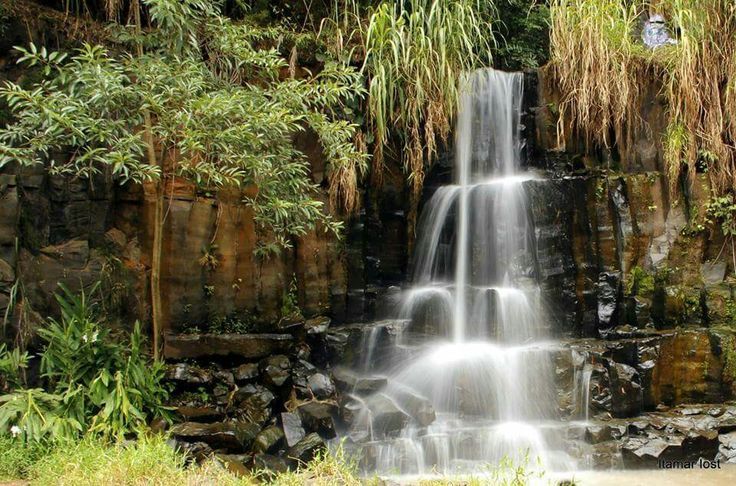

História e importância
O Parque do Basalto, localizado em Araraquara, São Paulo, é um dos principais pontos turísticos e de lazer da cidade, oferecendo uma rica experiência em meio à natureza. É um espaço de lazer e educação ambiental com mais de 65 mil metros quadrados. Ele abriga uma rica biodiversidade, incluindo mais de 350 espécies de plantas, 200 delas nativas, e 110 espécies de aves. O parque oferece áreas de recreação, como playgrounds, e promove atividades educativas para conectar os visitantes com a natureza e a história do local, que já foi uma pedreira de basalto.
Origem
A área onde hoje está o parque era uma pedreira que explorava o basalto presente no solo.
O Parque do Basalto em Araraquara surgiu a partir de uma pedreira que extraía basalto entre 1938 e 1965. Após a desativação da pedreira, a área ficou abandonada até que a Universidade de Araraquara (Uniara) demonstrou interesse em criar um parque ecológico no local em 1996, o que foi aprovado em 1998.
Abrangendo uma área de 64.718,56 m², o Parque do Basalto se destaca principalmente pela sua extensão, mas também pela rica diversidade de vida que abriga, incluindo mais de 150 espécies animais e 350 tipos de plantas.
O nome "Basalto" refere-se aos paredões de basalto, formados pelo resfriamento de derrames de lava há mais de 120 milhões de anos.
O que tem para fazer?
O Parque Natural Municipal do Basalto é uma fonte inesgotável de atrações naturais e atividades educativas, proporcionando uma experiência única de contato com o meio ambiente. Entre os seus principais atrativos podemos citar:
- Trilhas Ecológicas: Perfeitas para os amantes da natureza, estas trilhas são cuidadosamente planejadas para proporcionar uma imersão na diversidade biológica do parque. Ao percorrer esses caminhos, os visitantes podem observar de perto a flora e a fauna locais, incluindo espécies raras e endêmicas.
Informações práticas❗️
Endereço: Avenida São João, s/nº, Jardim Pinheiros, Araraquara, SP
Horário de funcionamento: De terça a domingo, das 8h às 18h. Fecha às segundas para manutenção.
Entrada: Gratuita
Regras: É proibido levar bebidas alcoólicas, entrar com animais domésticos, fazer churrasco ou banho na cachoeira.
📞 Contato para visitas monitoradas
Escolas e grupos interessados em visitas monitoradas podem agendar pelo telefone (16) 3339-5000 ou pelo e-mail cmea.basalto@araraquara.sp.gov.br.